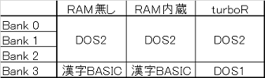

MSX-DOS2の秘密
MSX turboRからはMSX-DOS2が標準で内蔵されていますが、それ以前の機種では外付けのMSX-DOS2カートリッジを買わないとMSX-DOS2が使えませんでした。MSX-DOS2カートリッジは少なくともRAM無しバージョン、RAM 128kB内蔵バージョン、RAM 256kB内蔵バージョンの3種類が存在しているようです。MSX-DOS2発売当時（1988年頃）の本体はRAM 64kB搭載が一般的だったのですが、MSX-DOS2はRAM（メモリマッパ）が128kB以上ないと動作しないので、RAM内蔵バージョンの方が売れており、RAM無しバージョンはレアだったりします。
MSX-DOS2カートリッジに乗っているROMはいずれも64kBですが、この中に「漢字BASIC」も含まれています。turboRで似非レンジャー御用達の「KSAVER.COM」でMSX-DOS2のイメージを保存したときにも64kBのイメージができますが、この中には「漢字BASIC」は含まれないようで、確認してみると「MSX-DOS1」のカーネルが含まれているようです。ROMの中身はこんな感じです。

では、RAM無しバージョンとRAM内蔵バージョンのROMの内容が同じかというと、異なるようです。
RAM内蔵バージョンではメモリマッパが1スロット必要とするため、内部でスロットを拡張しています。そのため、RAM内蔵バージョンのMSX-DOS2は拡張スロット上では動作しません。また、ROMだけを見るとMSX-DOS2カーネルと漢字BASICが同じスロットにあるように見えますが、実際にはMSX-DOS2カーネルと漢字BASICは別の拡張スロットにも割り当てられます。そうした方が、本体の初期化の際に漢字BASICを簡単に認識できますし、漢字BASICを使う際も当該スロットのページに切り替えるだけで済みます。
RAM無しバージョンでは内部でスロットを拡張していないので、拡張スロット上でも動作します。しかし、Bank 3にある漢字BASICは、本体起動時にはそのままでは見えません。当該スロットに切り替えるだけでなく、バンクも切り替えないと漢字BASICが見えません。そのため、MSX-DOS2カーネル（Bank 0）の初期化の際に、漢字BASICを呼び出すときの処理に細工をしているようです。
RAM無し版のMSX-DOS2は拡張スロット上に挿しても漢字BASICが使えますし似○RAMにも入れられるので一見便利そうですが、ここで落とし穴が一つ・・・。漢字BASICを使えるようにするためのルーチンがMSX-DOS2カーネルの方に入っているので、他のスロットにバージョンの高いMSX-DOS2やNextorが存在していたりすると、そちらのカーネルが優先され、漢字BASICを使えるようになりません。RAM内蔵版のMSX-DOS2カートリッジであれば、独立した拡張スロットに漢字BASICが割り当てられるので、そのような事はありません。